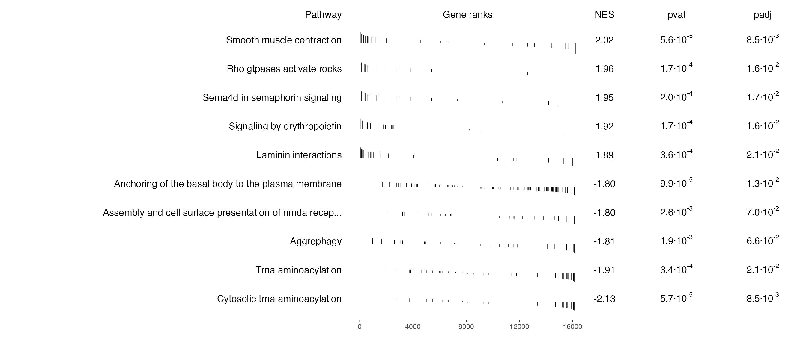
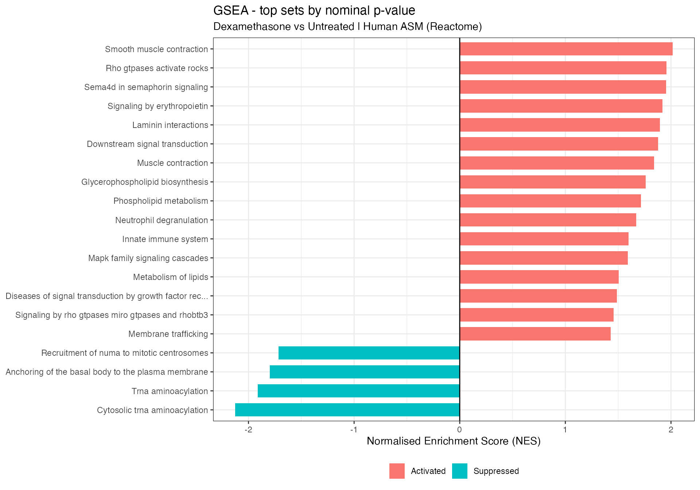
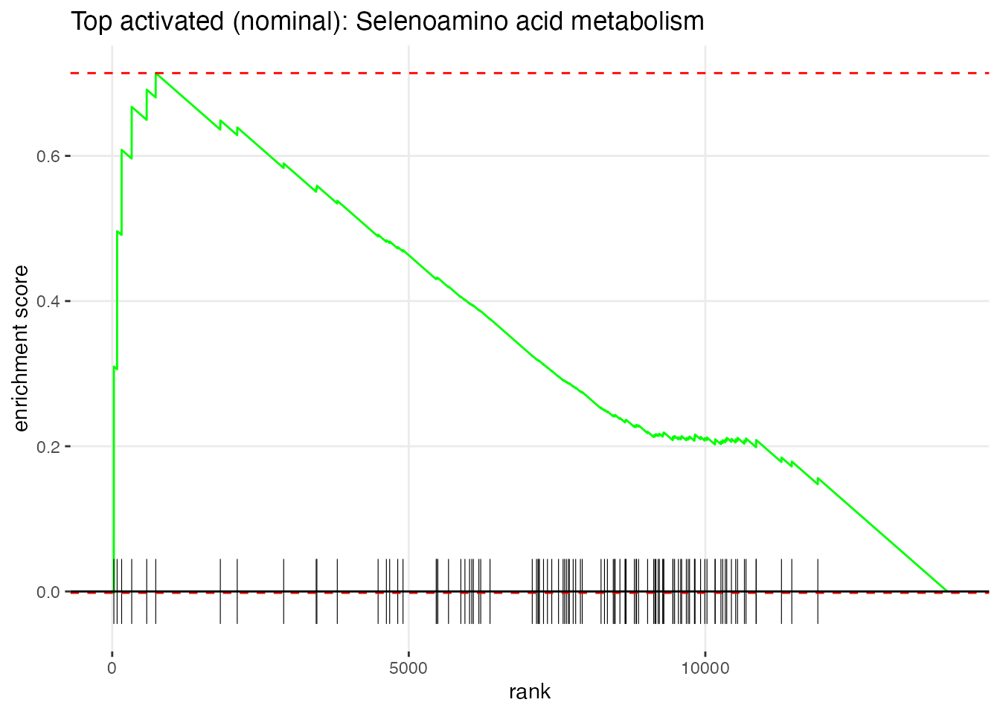
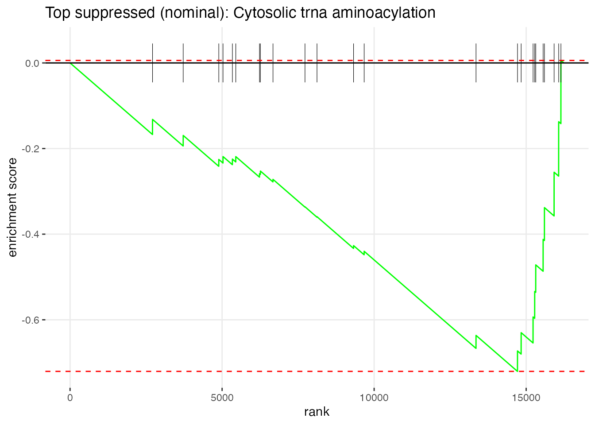

Running GSEA
Everything below follows from one idea: rank the genes, then look at where each gene set falls in that ranking. The score GSEA reports is the Normalised Enrichment Score (NES) - positive means the set sits towards the up-regulated end, negative towards the down-regulated end.
How we rank the genes
rank = stat, the Wald statistic from DESeq2 (log2FoldChange divided by its standard error)
This puts the genes that went up and are statistically convincing at the top, the ones that went down and are convincing at the bottom, and the uncertain ones in the middle. Ranking on fold change alone would be worse: a gene with 1 count in one group and 3 in the other shows a 3-fold change and would land at an extreme, despite telling us nothing.
Prepare the Ranked Gene List
Code
## Genes in ranked list : 16238## Infinite values : 0## Top 5 (upregulated) : CACNB2, DUSP1, SPARCL1, STEAP2, NEXN## Bottom 5 (downreg.) : DNM1, PRSS35, VCAM1, KCTD12, ADAM12Retrieve MSigDB Gene Sets
We use the MSigDB Reactome collection (C2: CP:REACTOME) for human, reshaped into the named list
fgsea expects. Reactome is a good fit here: it is a large, curated pathway collection that includes
detailed immune, inflammatory and signalling pathways - the biology this experiment is about.
Tip: To use a different collection, change the arguments below (e.g. Hallmark via
collection = “H”, or GO:BP via C5 / GO:BP). The subcollection
and argument names for msigdbr() changed between versions, so the call below detects the
right names automatically.
Code
# msigdbr argument names differ by version (collection/subcollection vs category/subcategory),
# and the KEGG subcollection was renamed, so we detect the available names first.
get_sets <- function(collection, subcollection = NULL) {
df <- tryCatch(
if (is.null(subcollection)) msigdbr(species = "Homo sapiens", collection = collection)
else msigdbr(species = "Homo sapiens", collection = collection, subcollection = subcollection),
error = function(e)
if (is.null(subcollection)) msigdbr(species = "Homo sapiens", category = collection)
else msigdbr(species = "Homo sapiens", category = collection, subcategory = subcollection)
)
split(x = df$gene_symbol, f = df$gs_name)
}
pathways_list <- get_sets("C2", "CP:REACTOME")
cat("Gene sets retrieved:", length(pathways_list), "\n")## Gene sets retrieved: 1839## Example set : REACTOME_2_LTR_CIRCLE_FORMATION## First 5 genes : BANF1, HMGA1, LIG4, PSIP1, XRCC4Run GSEA
We use fgseaMultilevel, which resolves very small p-values more accurately than the simple-permutation
fgsea(), with minSize = 15 and maxSize = 1000 to skip tiny unstable sets and enormous, uninformative
ones.
Code
## Gene sets tested : 1043## Significant (padj < 0.05): 26## Nominal (pval < 0.05) : 178What we see. In this dataset about two dozen gene sets are significant after multiple-testing correction (padj < 0.05), while several times as many reach the uncorrected threshold. Before reading anything into those, be clear about what the two numbers mean.
- The corrected count is the one you may report. It asks: out of all the Reactome sets we tested, which stand out after accounting for the fact that we tested them all?
- The nominal count is every set that looked interesting before that correction. In a collection this size you expect a crop of those by chance alone, so on their own they are leads to follow, not results to publish.
In the table and plots below, check the padj column before you read a set as a finding.
Inspect Gene Sets
Code
# Sets passing multiple-testing correction
gsea_padj_sig <- gsea_results %>% as.data.frame() %>% filter(padj < 0.05) %>% arrange(pval)
# Sets passing the nominal (uncorrected) threshold - for inspecting the biology
gsea_nom <- gsea_results %>%
as.data.frame() %>%
filter(pval < 0.05) %>%
arrange(pval)
cat("Sets significant after correction (padj < 0.05):", nrow(gsea_padj_sig), "\n")## Sets significant after correction (padj < 0.05): 26## Sets at nominal pval < 0.05 : 178Code
DT::datatable(
gsea_padj_sig %>%
select(pathway, NES, pval, padj, size) %>%
mutate(
direction = ifelse(NES > 0, "Activated", "Suppressed"),
across(where(is.numeric), \(x) signif(x, 3))
),
rownames = FALSE,
colnames = c("Gene set", "NES", "p-value", "padj", "Size", "Direction"),
extensions = c("Buttons", "Scroller"),
options = list(dom = "Bfrtip", buttons = c("copy", "csv"),
scrollX = TRUE, scrollY = 300, scroller = TRUE),
caption = "GSEA gene sets significant after multiple-testing correction (padj < 0.05)"
)Summary Table of the Top Sets
plotGseaTable() puts the strongest sets side by side with a miniature of each one’s running
enrichment score. It is the fastest way to see whether a result is solid or thin: a real
enrichment shows a curve with a clear peak and gene ticks bunched at one end, while a weak one
shows a shallow, wandering curve and ticks scattered along the whole width.
Code
# Reactome set names are very long ("REACTOME_REGULATION_OF_INSULIN_LIKE_GROWTH_
# FACTOR_IGF_TRANSPORT_AND_UPTAKE_BY..."). Left as they are, the labels take the
# whole plot and squeeze the bars off the edge, so we tidy them for display.
tidy_set_name <- function(x) {
x %>%
str_remove("^REACTOME_") %>%
str_replace_all("_", " ") %>%
str_to_sentence() %>%
str_trunc(55)
}
# NB: fgsea loads IRanges, whose slice() masks dplyr's - hence dplyr::slice here.
top_sets <- gsea_padj_sig %>%
arrange(desc(NES)) %>%
dplyr::slice(c(1:5, (dplyr::n() - 4):dplyr::n())) %>% # five most positive, five most negative
dplyr::pull(pathway)
# shorten the set names for display, as in the bar plot
top_pathways <- pathways_list[top_sets]
names(top_pathways) <- tidy_set_name(names(top_pathways))
plotGseaTable(
pathways = top_pathways,
stats = rank_vector,
fgseaRes = gsea_results %>% mutate(pathway = tidy_set_name(pathway)),
gseaParam = 0.5
)
Look at the little curves before you read the names. A set with a clear peak and ticks bunched at one end is a coordinated shift; compare the small sets with the very large ones.
NES Bar Plot: Strongest Corrected Sets
We plot up to twenty of the sets that survive correction, ordered by p-value, so everything shown here is a result rather than a lead.
Code
gsea_bar <- gsea_padj_sig %>%
slice_min(pval, n = 20) %>%
mutate(
direction = ifelse(NES > 0, "Activated", "Suppressed"),
pathway = fct_reorder(tidy_set_name(pathway), NES)
)
if (nrow(gsea_bar) > 0) {
gsea_nesplot <- ggplot(gsea_bar,
aes(x = NES, y = pathway, fill = direction)) +
geom_col(width = 0.7) +
geom_vline(xintercept = 0, color = "black", linewidth = 0.5) +
theme_bw() +
theme(legend.position = "bottom") +
labs(
title = "GSEA - strongest sets after correction",
subtitle = "Dexamethasone vs Untreated | Human ASM (Reactome)",
x = "Normalised Enrichment Score (NES)",
y = NULL,
fill = NULL
)
gsea_nesplot
} else {
cat("No gene sets survived multiple-testing correction, so there is nothing to plot.\n")
}
Enrichment Plot: Top Sets
The enrichment plot shows the running sum of the enrichment score for a single gene set across the ranked gene list. The peak of the curve is the enrichment score; genes from the set are shown as vertical bars (the “rug”) at the bottom.
How to read it: the x-axis is every tested gene, ordered from most up-regulated (left) to most down-regulated (right). Each tick in the rug is one gene of the set. Ticks bunched at one end drive the curve to a high peak - coordinated enrichment. Ticks spread evenly across the axis give a flat, wandering curve and no enrichment.
Code
top_up <- gsea_padj_sig %>% filter(NES > 0) %>% slice_min(pval, n = 1) %>% pull(pathway)
top_down <- gsea_padj_sig %>% filter(NES < 0) %>% slice_min(pval, n = 1) %>% pull(pathway)
if (length(top_up) > 0) {
print(
plotEnrichment(pathways_list[[top_up]], rank_vector) +
labs(title = paste("Top activated:", tidy_set_name(top_up)))
)
}
Code
